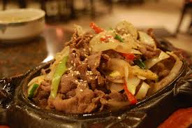
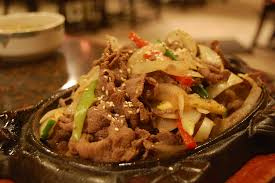

What is Bulgogi?
Bulgogi is a beloved Korean dish featuring tender, thinly sliced beef marinated in a sweet and savory sauce. The beef is typically grilled or stir-fried to perfection, often alongside colorful vegetables like onions, mushrooms, and carrots. This mouthwatering dish is commonly served with steamed rice and an array of side dishes, making it a complete and satisfying meal. Bulgogi can be adapted to suit various tastes and dietary needs, with options including pork or chicken.
source: https://dictionary.langeek.co/en-KO/word/217978?entry=bulgogi
Ingredient
Main
- Thinly sliced beef
- Onion
- Green onion
- Sesame seeds
- Carrot
Sauce
- Soy Sauce
- Water
- Sugar
- Mirim
- Minced garlic
- Minced ginger
- Minced green onion
- Sesame oil
Preps
- Seasoning the beef with sauce and let it rest
- Slice onion, green onion and Carrot
Cooking
- Stir-fry the marinated meat in a little oil
- Once the meat is half-cooked, add the vegetables and stir-fry together
- Add black pepper to taste
- Finally, top with sesame seeds
 
